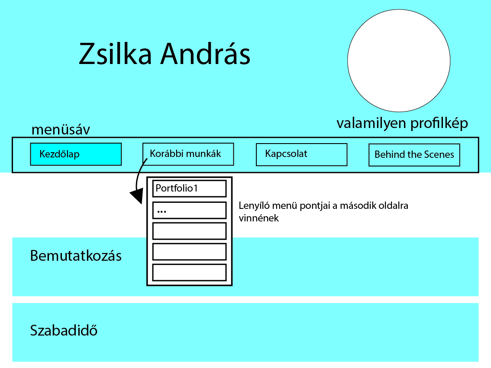
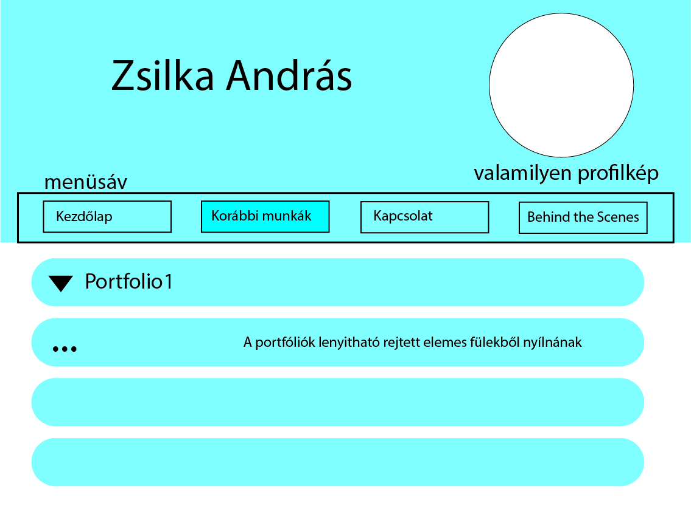
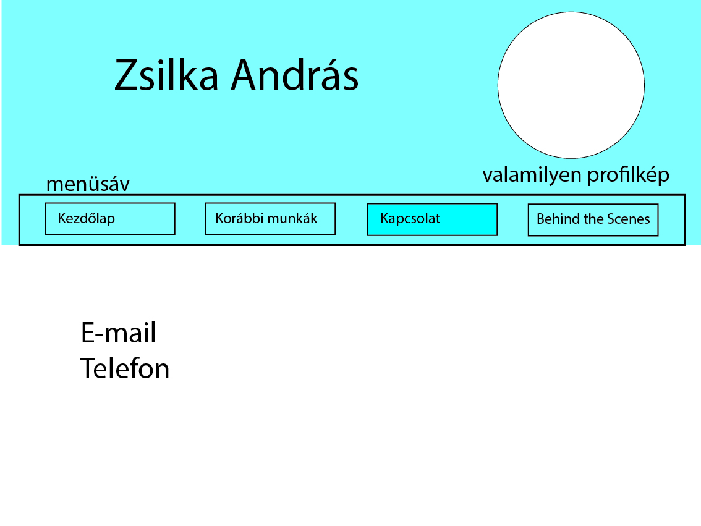
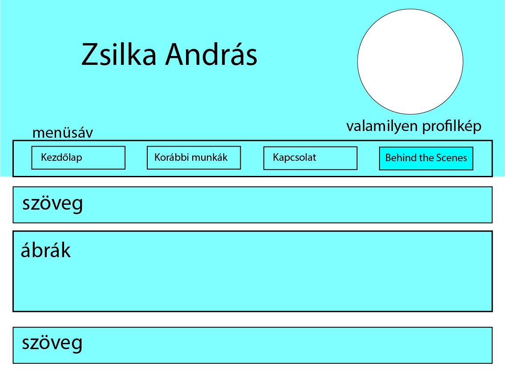

Az oldal szerkesztése
   
Változások - felmerült nehézségek
- Először a szabadidő fül helyett egy kapcsolatok fület terveztem, de mivel csak egy sorból állt volna, így a 3. fül témája a szabadidő lett.
- A felhasznált képek nagy részét pdf-ből kellett kiügyeskednem, ami kicsit hosszadalmas volt.
- A színvilágot világoskékről narancssárgásra változtattam.
- Amikor megpróbáltam a menü gombjainál az egész div-eket linkbe foglalni, akkor szétesett a grid-szerkezet, így végül a gomboknak csak a felirat része lett ténylegesen kattintható.
- Arra gondoltam, hogy a menü egyik gombját lenyíló listával készítem el, amit majd hover-el kombinálok. De eszembe jutott, hogy a lenyíló rész valószínűleg eltűnne, ha levinném a kurzort a listára, így azzal nem töltöttem időt, és inkább egy számomra egyszerűbb megoldást választottam.
- Utólag észrevettem, hogy a class hivatkozásokat nem angol és egyéb szavakkal kellett volna jelölni, de azt már sajnos nem tudtam javítani.
Források:
https://en.wikipedia.org/wiki/Web_colors
https://fonts.google.com/
Órai anyag